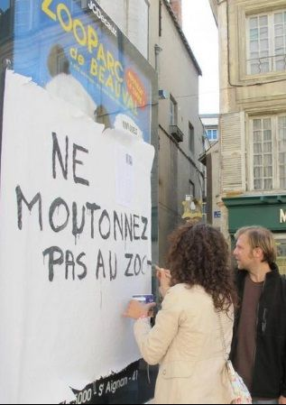

| |
Site dédié à la publication d'informations communiquées par le Collectif des déboulonneurs. En aucun cas ce site n'appelle à des actions illégales. | |
 |
||
|
Accueil du site > Poitiers > [Poitiers] Détournements de pub par les Déboulonneurs Poitiers
Compte-rendu originellement posté sur le blog du Pavillon Noir. Les Déboulonneurs Poitiers ont organisé ce mercredi 16 mai une promenade antipub. Il s’agissait d’aller de rendre visite aux hideuses sucettes publicitaires qui jalonnent le centre-ville, pour discuter ensemble des détournements possibles, puis de scotcher sur ces totems de la marchandise des papiers annotés de formes diverses, peints ou écrits au marqueur. Une vingtaine de personnes ont répondu à l’appel, entamant une déambulation sympathique, en compagnie d’une participante revêtue pour l’occasion d’une jolie robe en prospectus publicitaires. Sous bonne escorte d’une demi-douzaine de flics notant scrupuleusement les phrases écrites, le cortège s’est arrêté un moment, en soutien à des personnes que les flics dégageaient du porche de Notre-Dame pour “chien non tenu en laisse”, prétexte habituel pour harceler les sans-logis et mal-logé-e-s de Poitiers. Onze sucettes publicitaires ont finalement été détournées. Des gens se sont arrêtés pour prendre le temps de regarder ces oeuvres éphémères, et lire le tract des Déboulonneurs qui était scotché à chaque fois dans un coin. Un papier est aussi paru dans la presse locale voir ci-dessous 
La nouvelle république du 17/05/2012 : Les antipub sont de retour à Poitiers. Le collectif “ les déboulonneur-euse-s ” ont pris pacifiquement pour cible les sucettes publicitaires du centre-ville. Trois mois après avoir relancé leur mouvement, les « Déboulonneur euse-s » de Poitiers sont passés « à l’attaque », hier en fin d’après-midi avec pour seules armes du ruban adhésif, plusieurs mètres de papier, des ciseaux et quelques feutres ! Une petite vingtaine de « Déboulonneurs » a pris pour cible les sucettes publicitaires et les abris de bus de l’hyper centre de Poitiers. Et ce sont précisément les slogans qu’ils ont détournés et enrichis de bulles. A ne pas confondre avec l’action des antinucléaires (les « éteigneurs » de sucettes), le 17 mars dernier, cette déambulation – suivie par une demi-douzaine de policiers – a conduit le petit groupe, rue du Marché, place Notre-Dame avec la volonté d’inciter les Poitevins « à se réapproprier l’espace public, colonisé et confisqué par la publicité ». Ils n’ont forcé aucun des supports publicitaires et ne les ont pas badigeonnés de peinture. Leur action se voulait « poélitique », sympathique pour dénoncer la publicité qui, expliquent-ils dans un tract, « pollue », « harcèle », « qui n’est ni une culture, ni une expression libre ». « Notre objectif, explique Sylvain, est de susciter un débat citoyen, de faire prendre conscience aux habitants que l’espace public leur appartient. Nous voulons que les gens sachent que la somme que rapporte cette publicité à la Ville est dérisoire. Nous souhaitons provoquer le débat et à terme interpeller les élus municipaux pour un Poitiers sans pub. Avec un euro supplémentaire par contribuable, on se passerait de publicité à Poitiers ! » L’invitation lancée à ce qu’ils ont eux-mêmes appelé « promenade antipub » n’a guère trouvé d’échos auprès de Poitevins pressés de regagner leur domicile et d’entamer, pour un certain nombre d’entre eux, un long week-end comme ces trois étudiantes rencontrées, rue de l’Université que l’action n’a pas convaincues. « Les pubs, à force d’en voir, on ne les voit plus tout simplement. Elles font partie du paysage, c’est tout. » |
|
Site utilisant SPIP - Hébergement Ouvaton
|